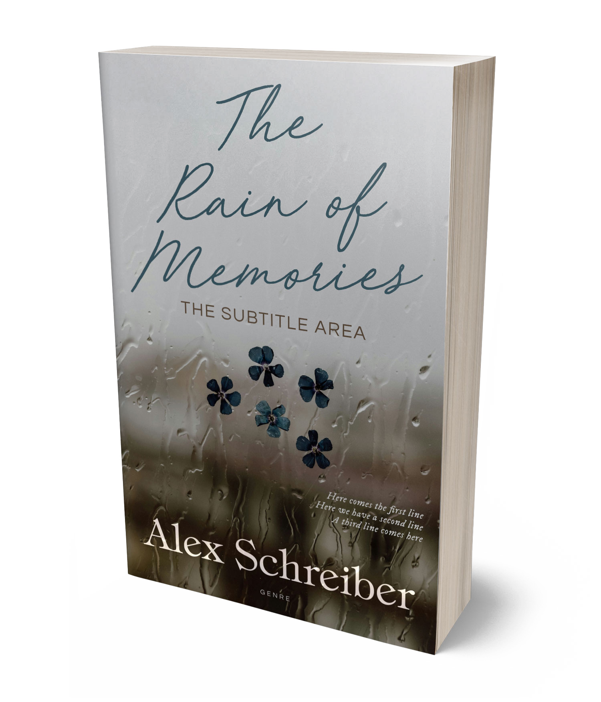

A tender literary romance about the memories we preserve, the ones we rewrite, and the courage it takes to return.

Alex Schreiber writes emotionally layered love stories about imperfect families, evocative places, and the quiet moments that change a life.